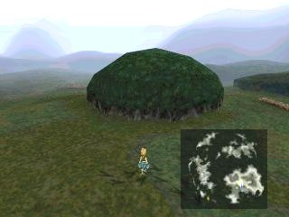
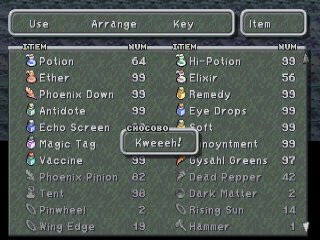
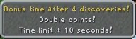
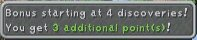
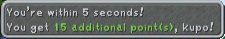
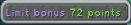
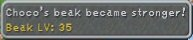
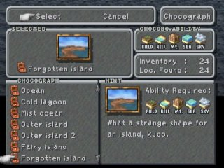
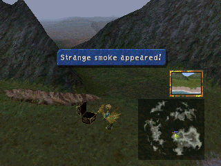

|
Chocobo
Get Chocobo
ตัวละครสามารถเรียก Chocobo ได้ จากบริเวณแผนที่ ที่มีรูปรอยเท้า Chocobo

โดยการกดใช้ Gysahl Greens ก็จะได้ Chocobo มาใช้

เมื่อขี่ Chocobo เข้าไปใน Chocobo's Forest จะสามารถเข้าไปได้
Chocobo's Forest

ตัวละครสามารถเล่น mini game ใน Chocobo's Forest ได้
โดยการคุยกับ Mog และเลือกเล่นเกม Chocobo Hot&Cold (ครั้งละ 60 Gil)

How to Play : Chocobo Hot&Cold
ขี่ Chocobo และขุดบริเวณพื้นดิน จะได้ยินเสียง Chocobo ร้อง
Kweh : ไม่มีสมบัติอยู่ใกล้บริเวณนี้ (ให้วิ่งไปขุดบริเวณอื่น)
Kweh!? : อยู่ใกล้สมบัติมากขึ้น (สำรวจดูรอบๆ บริเวณนี้)
Kwehhh!? : อยู่ใกล้สมบัติมาก (สำรวจบริเวณใกล้ๆ จุดนี้)
K-KWEHHH!!! : เจอสมบัติแล้ว (รีบขุดอย่างรวดเร็ว)
เมื่อจบเกม จะได้รับสมบัติที่ขุดมา
ซึ่งมีตั้งแต่ Potion, Hi-potion, Phoenix Down, Tent, Chocograph, Dead
Pepper etc...
ระหว่างที่เล่น หากขุดพบสมบัติครบ 4 ชิ้น จะได้เวลาเพิ่มอีก 10 วินาที

และจะได้รับคะแนนเพิ่มอีกด้วย เช่น


หากสามารถขุดสมบัติได้ครบทั้งหมด ก็จะได้รับคะแนนเพิ่มอีกมากมาย

นอกจากจะได้คะแนนแล้ว Chocobo จะได้รับความสามารถในการขุดเพิ่มขึ้นอีกด้วย
โดยการได้ "กรงเล็บ" ที่แข็งแรงขึ้น สามารถขุดพื้นดินได้เร็วขึ้น


คะแนนที่ได้สามารถนำมาแลกสิ่งของกับ Mog ได้ ดังนี้
Robe of Lords 10,000 คะแนน
Protect Ring 8,500 คะแนน
Wing Edge 3,500 คะแนน
Viltgance Card 1,800 คะแนน
Ether 450 คะแนน
Ore 250 คะแนน
Pheonix Down 150 คะแนน
Gysahl Green 10 คะแนน
นอกจากนี้ยังสามารถซื้อ Gysahl Green ได้จาก Mog ในราคาชิ้นละ 80 Gil
Chocograph
หากขุดเจอ Chocograph จะสามารถขี่ Chocobo ออกไปขุดหาสมบัติบริเวณแผนที่โลกได้ด้วย

สมบัติ Chocograph มีความสำคัญมาก
เพราะบางชิ้น เมื่อขุดเจอ จะสามารถทำให้ Chocobo เปลี่ยนสีได้ มีตั้งแต่
สีฟ้า : สามารถเดินบนบริเวณน้ำตื้นได้
สีแดง : สามารถเดินข้ามภูเขาได้
สีม่วง : สามารถเดินผ่านทะเลได้
สีทอง : สามารถบินได้
ซึ่งความสามารถใหม่ๆ นี้ จะนำ Chocobo ไปยังสถานที่ใหม่ๆ ได้อีกด้วย



แผนที่ Chocograph ผมไม่ได้ทำไว้นะครับ แต่มี Link ของคนอื่น
ของ Team Contra ดีมากๆ เลยครับ
http://www.geocities.com/final9eng/secret/26/index.html
Dead Pepper
อาจสงสัยว่า Dead Pepper เอาไว้ทำอะไร
ลองกดใช้กับ Chocobo ของคุณดู จะพบว่า... มันทำให้ Chocobo มีพลังเพิ่มมากขึ้น
!!!
จริงๆ แล้ว มันเอาไว้ให้ Chocobo ของคุณ สามารถขุดรูบริเวณพื้นดินที่มีรอยแตกได้
หรือดำน้ำในบริเวณที่มีฟองน้ำ และที่สำคัญ มันสามารถพาคุณไปยัง Chocobo's
AirGarden ได้
แผนที่ที่จะใช้ Dead Pepper ผมก็ไม่ได้ทำไว้นะครับ แต่มี Link ของ Team
Contra อีกแล้ว
http://www.geocities.com/final9eng/secret/27/index.html
Chocobo's Lagoon


การจะไป Chocobo's Lagoon ได้นั้น ต้องมี Chocobo สีฟ้าก่อน
เมื่อเข้าไปจะสามารถเล่นเกม Chocobo Hot&Cold ได้เช่นกัน
หากสามารถมาถึง Chocobo's Lagoon ได้แล้ว ให้ขุดหา Chocograph ให้ครบทั้งหมด
จนสามารถเปลี่ยนสี Chocobo เป็นสีแดง และม่วงได้
จะสามารถลงไปขุดหาสมบัติบริเวณน้ำลึกใน Chocobo's Lagoon ได้
และสามารถปีนขึ้นเนินไปขุดหาสมบัติบนเนินใน Chocobo's Forest ได้
เมื่อขุดหาได้จนครบก็จะเจอ Chocograph ที่สามารถเปลี่ยน Chocobo ให้เป็นสีทอง
Chocobo's AirGarden

เมื่อมี Chocobo สีทอง และใช้ Dead Pepper บริเวณที่มีเงาของ Chocobo's AirGarden
ลอยอยู่
ก็จะสามารถขึ้นมาบน Chocobo's AirGarden ได้ (Chocobo's
AirGarden Map)
บนนี้สามารถเล่น Chocobo Hot&Cold ได้เช่นกัน และจะได้รับคะแนนเยอะมากด้วย
ที่สำคัญ บนนี้จะมี Boss ลับ นั่นก็คือ Ozma
Chocobo Paradise


นี่คือสถานที่สุดท้ายที่ Chocobo ค้นหา
สถานที่นี้จะไม่มีบนแผนที่ ต้องใช้ Chocobo สีทอง บินมา
ที่นี่จะมี Fat Chocobo อยู่ พร้อมทั้ง Chocobo หลากสี
หากสามารถขุดหา Chocograph ได้ครบทั้งหมด Fat Chocobo จะให้รางวัลด้วย
|


{kind=link}